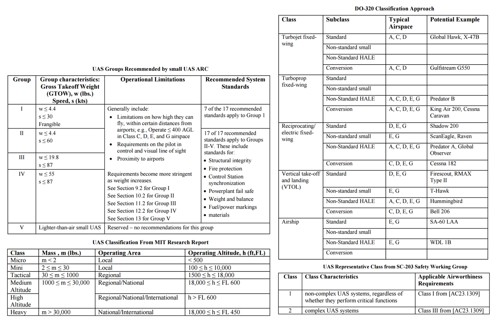
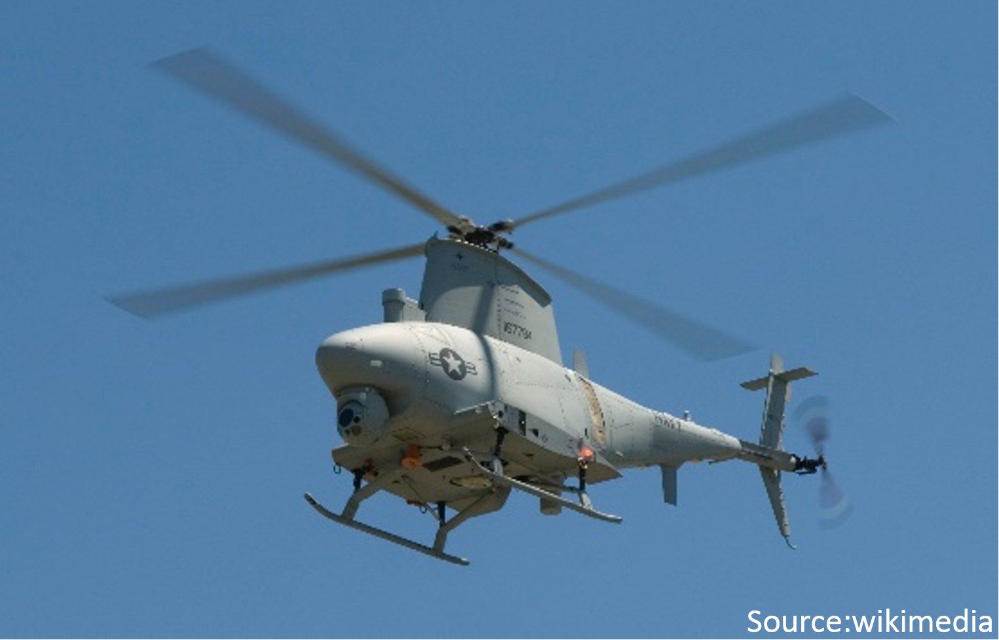

Introduction to UAS
GIS595/MEA792: UAV/lidar Data Analytics
NCSU
OSGeoREL
at
Center for Geospatial Analytics
Fall 2015
Objectives
- Use the proper terminology and understand its meaning
- Describe the historical evolution of the UAS
- Describe the elements of UAS
- Classify different UAS according to their make and characteristics
- Describe the different classes of the UAS
- Recognize the military and civilian contribution to the UAS development
- Understand the current state of the UAS development
- Describe the objectives beyond the use of the UAS
What is an UAV?
For the brief summary read the overview articleUAS or UAV? Or maybe a drone?
UAV = Unmanned Aerial Vehicle
UAS = Unmanned Aerial Systems
Drone = Dynamic Remotely Operated Navigation Equipment
RPA = Remotely Piloted Aircraft
UAS
UAS = Unmanned Aircraft Systems
- Unmanned =
without a person onboard (operated by automatic or remote control)
- Aircraft =
able to fly

- System = associated elements related to safe operations
(may include control stations,control links, support equipment, payloads, flight termination systems, and launch recovery equipment)
consists of three elements: - Unmanned Aircraft;
- Control Station;
- Data Link.
UAS or UAV? Or maybe a drone?
UAV = Unmanned Aerial Vehicle (?)
- Excludes: missiles, weapons, or exploding warheads,
- Includes: all classes of airplanes, helicopters, airships, and powered-lift aircraft,
- Doesn’t include: traditional balloons, rockets, tethered aircraft and un-powered gliders.

More about terminology in the article: Don’t Use the ‘D’ Word: They’re ‘UAVs’ or ‘RPAs’ But Definitely Not ‘Drones’
How does an UAS look like?
Types and classification of UAS
Different shapes and sizes…

… different designs…

… and different classifications
- By physical size
- By weight
- By endurance
- By altitude
- By wing loading
- By engine type
- By range
- By performance
- By capabilities
- By type...

US classifications
more about classifications in this article (source for the table)
International classifications

Simplified classifications

- More (much much more) about classifications in the article
- Condensed basics including classification can be found in Unmanned Aircraft Systems for Civilian Missions
How does UAS work?
System elements
Generic Unmanned Aircraft System

- Air vehicle
- Mission planning element
- Command and control element
- Communication link
- Launch and recovery element (for some of them)
- Payload
Sensors

Sensors (2)

Who invented a first UAS?
Brief history
History – early beginnings
- 1782 Montgolfier baloon
- 1843 and 1848 Aerial steam carriage (small distances within the hangar)
History – pioneers
1918 Kettering Bug
- never used in combat,
- Max flying distance: 75 mi
1944 Germany: V-1 flying bomb (Buzz Bug),
USA: Interstate BQ-4/TDR(TDN).

History – modern era
- Vietnam War: UAVs used extensively in combat, but only for reconnaissance
- 2002 first rotary wing UAV Northrop Grumman MQ-8 Fire Scout 
- last four decades (movie)
Who uses UAS?
Types of UAV operations
Types of UAS Operations
- Public Operations
Governmental, limited by federal statue to certain government operations within U.S. Airspace; - Civil Operations
Non-Governmental, must be conducted in accordance with all Federal Aviation Administration (FAA) regulations; - Model Aircraft
Hobby or Recreation only.
FAA – Federal Aviation Administation
- NAS – National Airspace System
The common network of U.S. airspace — air navigation facilities, equipment, and services; airports or landing areas; aeronautical charts, information and services; rules, regulations, and procedures; technical information; and manpower and material.

Integration of UAS into the NAS
- review of current policies, regulations, environmental impact, privacy considerations, standards, and procedures;
- identification of gaps in current UAS technologies and regulations, standards, policies, or procedures;
- development of new technologies and new or revised regulations, standards, policies, and procedures;
- and the associated development of guidance material, training, and certification of aircraft systems, propulsion systems, and airmen.
For more info: Integration of UAS in the NAS Roadmap
Can I use it?
regulations, standards, policies, and procedures
What are UAS used for?
Army and government
Public Use Aircraft
- Department of Agriculture
- Department of Commerce
- Department of Defence
- Department of Energy
- Department of Homeland Security
- Department of Interior
- Department of Justice
- NASA
- NOAA
- State Universities
- State Law Enforcement

Civilian Application Fields for UAS

Commercial markets:
- Engineering & Surveying
- Mining
- Civil & Heavy Earthworks
- Oil & Gas
- Environmental & Landfill
- Public Agencies
- Agriculture & Forestry
Application examples (1)

- Agricultural industry:
- UAS equipped with fertilizer and pesticide dispersing equipment can be used to spray over large fields;
- Telecommunications:
- As mobile relay platforms as well as in disaster zones for emergency telecommunications;
Application examples (2)

- News broadcasting:
- In providing aerial video feeds for news events where reporters cannot get into time;
- Air traffic Control and ground traffic control:
- To monitor traffic and accidents over highways and road in big and densely populated cities, violation of traffic rules;
Application examples (3)

- Mineral exploration:
- In aerial survey, to find minerals in desolate and hard-to-reach regions;
- Coastal surveillance:
- By the coast guard for monitoring coastlines;
UAS for Remote Sensing (1)

- Agricultural and environmental application:
- Vegetation and/or biodiversity control, forest fire monitoring, tree classification, monitor stream temperatures, animals detection, bird counts;
- Intelligence, surveillance, and reconnaissance:
- Detection of lost persons in difficult-to-access situations, support fire brigades in real-time crisis management, rapid disaster management;
UAS for Remote Sensing (2)

- Aerial monitoring in engineering:
- Infrastructure inspections and crop monitoring, distributed wind measurement, landslide monitoring;
- Cultural heritage:
- Orthophotos of archaeological sites, 3D models of man-made structures;
UAS for Remote Sensing (3)

- Traditional surveying, conventional mapping and photogrammetry, and cadastral applications:
- cadastral surveying, advantageous alternative to traditional surveying, high-precision parcel boundary determination;
Extended review on UAS in remote sensing in the article
Use your imagination!
Why shoud you know how to use UAV?

Barriers
- the absence of legislation and regulation,
- political and societal acceptance,
- high development and procurement.